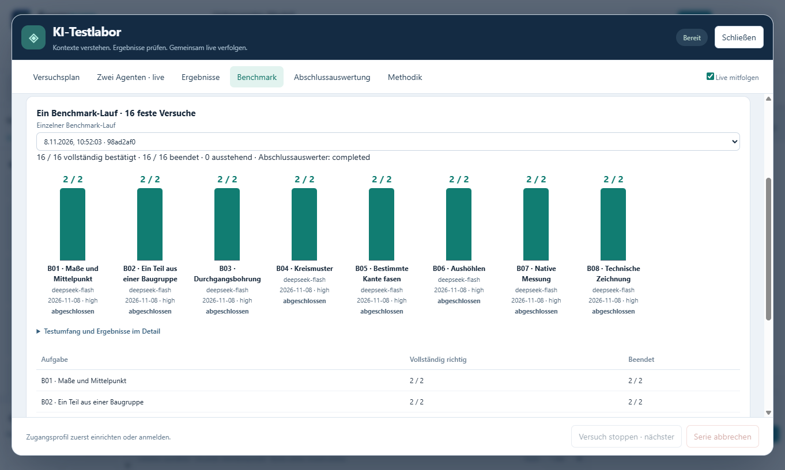

Der Modellieragent
Er erhält die Aufgabe und die festgelegten Startinformationen. In einem getrennten Testprojekt bearbeitet er den Auftrag. Im Übungsmodus sind die tatsächlich ausgeführten Bedienaktionen sichtbar.
KI-Testlabor · Ein Blick in die Entwicklung
Wie gut versteht eine KI einen CAD-Auftrag? Findet sie die passenden Werkzeuge und stimmt am Ende die Geometrie? Unser Testlabor macht diese Abläufe nachvollziehbar – vom Auftrag bis zur unabhängigen Ergebnisprüfung.

Eigenständiger Benchmark
Der Benchmark-Reiter zeigt ausschließlich den ausgewählten 16er-Lauf. Erfolgreiche Bedingungen werden beim Fortsetzen nicht wiederholt. Gezielte Nachtestserien bleiben getrennt.


Dieselben acht Aufgaben, je zwei Versuche, Denkstufe high und Überwacher aus. DeepSeek lief auf 0.137.0-r1 / Suite 1.0.2, Sol auf 0.137.4-r2 / Suite 1.0.4. Programmstand, Werkzeugauskunft und Promptstand unterscheiden sich. Die Gegenüberstellung beschreibt diese Läufe; sie belegt keine Modellrangfolge auf gleichem Stand und keine allgemeine Zuverlässigkeit.
0.137.4-r2 vervollständigt die Bohrungsanweisungen und behebt die Erneuerung ablaufender Zugangstokens während der Laborläufe. Der erfolgreiche einzelne Bohrungsnachtest wurde auf 0.137.4-r1 gemessen. Es wurden keine Ergebnisse zu einem neuen Vollbenchmark zusammengefasst.
01 · Ausführen und prüfen
Er erhält die Aufgabe und die festgelegten Startinformationen. In einem getrennten Testprojekt bearbeitet er den Auftrag. Im Übungsmodus sind die tatsächlich ausgeführten Bedienaktionen sichtbar.
Er beurteilt Vorschläge, ausgeführte Schritte, Werkzeugfehler und den Endzustand. Seine Rückmeldung lautet Weiter, Stop oder Unklar. Er verändert das Modell selbst nicht.
Nach dem vollständig angeforderten Prüfumfang fasst er belegte Befunde, offene Fragen und konkrete Änderungsvorschläge zusammen. Er schreibt weder Ergebnisse um noch verändert er das CAD-Modell.
Formnaro prüft die vorgegebenen Maße und Geometriebedingungen am tatsächlichen CAD-Modell. Dazu gehört auch, dass unbeteiligte Teile erhalten bleiben.
Im beobachtenden Modus werden Stopempfehlungen protokolliert. So können wir auch Fehlalarme erkennen. Der experimentelle aktive Modus kann einen Versuch abbrechen.
02 · Vergleichbare Aufgaben
Wir vergleichen, welche Startinformationen und Werkzeugbeschreibungen helfen, wie sich der Denkaufwand auswirkt und welchen Unterschied Bilder oder der ausgewählte Szenenausschnitt machen.
Aufgaben, Varianten und Wiederholungen werden vorab festgelegt. Dadurch können wir Fehler untersuchen und betroffene Fälle später gezielt erneut testen.
Zum Beispiel: Verschieben, Drehen, Kopieren, Bohren, Skizzen, Zeichnungen, Runden, Fasen und Gelenke.

Ein konkretes Beispiel
Die Aufgabe verlangt eine Rundung an einer bestimmten Außenkante. Die KI öffnet den Kanteneditor, wählt die Kante, setzt den Radius und übernimmt die Vorschau.
03 · Aus Ergebnissen lernen
Die Auswertung zeigt getrennt, ob ein Versuch beendet wurde, die native Prüfung bestanden ist und ein gültiges Überwacher-Endurteil vorliegt. Hinzu kommen Laufzeiten, gemeldeter Tokenverbrauch und Kostenschätzungen.

Verständlichere Aufgaben, passendere Werkzeugauskünfte, zuverlässigere Bedienwege und genauere Ergebnisprüfungen. Auch Fehler im Testaufbau selbst werden so erkennbar. Anschließend prüfen wir die betroffenen Fälle erneut.
Von der Diagnose zum Testlabor
Am Anfang verglichen wir die vom Anbieter ausgegebenen Denktexte mit Werkzeugaufrufen und Fehlermeldungen. Daraus entstand ein Labor, das auch ausgeführte Schritte und die tatsächliche CAD-Geometrie prüft.
Denktexte sind ausgegebene Anbietertexte und kein vollständiger Einblick in interne Modellvorgänge. Die Verbesserungen betreffen Formnaros KI-Anbindung, Bedienung und Prüfung im Entwicklungsstand; sie sind kein Training des zugrunde liegenden KI-Modells.
Entwicklungsstand
Seit der öffentlichen Ausgabe 0.137.1-r1 liegt das Labor unter Einstellungen → KI / API → KI-Testlabor. Die gezeigten Aufnahmen stammen aus Version 0.133.0 r3. In der aktuellen Ausgabe sind die Zugänge, Modelle und unterstützten Denkstufen für alle drei Rollen getrennt wählbar. Der neue Grundbenchmark umfasst acht Aufgaben mit je zwei Wiederholungen; mitgelieferte Laborwerte bleiben als Teilstände gekennzeichnet.
Die Prüfungen beziehen sich auf die jeweils festgelegten Aufgaben. Allgemeine Modellqualität und Fertigbarkeit müssen darüber hinaus beurteilt werden.